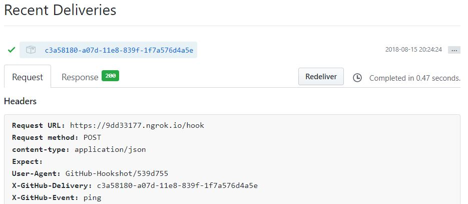

Haskell Servant で GitHub Webhook
久々の投稿． とある事情で GitHub Webhook 用のサーバーを Haskell で書いたのでそのメモ書きです．
やったこと
- rio のロガーを Servant で使う
- servant-github-webhook を使って Webhook 用の Servant サーバーの構築
実際に書いたコードはこの辺りを見ると良いかな． 色々と途中のうえ，そもそも GitHub Webhook がメインではないリポジトリなので見にくい気がするけど．
Servant で rio モナド
これはまぁおまけですね． rio はロギングとかが便利なので，先に紹介して以降で利用する．
ロガーの準備
まずはロギング用のモナドを定義する．
{-# LANGUAGE DataKinds #-}
{-# LANGUAGE OverloadedLabels #-}
{-# LANGUAGE TypeOperators #-}
import RIO
import Data.Extensible
type Env = Record
'[ "logger" >: LogFunc
]
instance HasLogFunc Env where
logFuncL = lens (view #logger) (\x y -> x & #logger `set` y)いわゆる Has パターンというやつ． これで RIO Env というのがロガーを扱えるモナドとなる．
Servant でカスタムモナド
Servent Server のメイン関数は下記のように定義できる．
import RIO
import Data.Extensible
import qualified Network.Wai.Handler.Warp as Warp
import Servant
main :: IO ()
main = do
logOpts <- logOptionsHandle stdout False
withLogFunc logOpts $ \logger -> do
let env = #logger @= logger
<: nil :: Env
hPutBuilder stdout "Listening on port 8080"
Warp.run 8080 $ app env
app :: Env -> Application
app = undefinedさて，問題はこの app 関数だ． 普通は Server 型と serve 関数を用いて次のように書く．
type API = ...
api :: Proxy API
api = Proxy
server :: Server API
server = ...
app :: Application
app = serve api serverServer 型の代わりに，カスタムモナドを利用するには ServerT 型と hoistServer 関数を用いる． それぞれの型定義は次のようになっている．
type Server api = ServerT api Handler
serve :: HasServer api '[] => Proxy api -> Server api -> Application
hoistServer :: HasServer api '[] => Proxy api -> (forall x. m x -> n x) -> ServerT api m -> ServerT api nさぁあとは型パズルだ！
server :: ServerT (RIO Env) API
server = ...
app :: Env -> Application
app env = serve api $ hoistServer api (runRIO env) serverこれで server 関数で呼び出す， API ごとの関数で logInfo のような rio のロギング関数を呼ぶことができる．
Servant で GitHub Webhhok
さて色々準備ができたので，いよいよ GitHub Webhook の方に話を移す． Haskell Servant で GitHub Webhook を使うには servant-github-webhookというパッケージを使う． 意外と，このパッケージの使い方を書いた記事がなく手間取ったのでまとめる．
ping API を作る
ping API は GitHub Webhook の設定がうまくできてるかを確認する API だ．

ping API は次のように設定すれば良い．
import GitHub.Data.Webhooks.Events
import Servant
import Servant.GitHub.Webhook
type API = "hook" :> WebhookAPI
type WebhookAPI
= GitHubEvent '[ 'WebhookPingEvent ]
:> GitHubSignedReqBody '[JSON] PublicEvent
:> Post '[JSON] ()
server :: ServerT (RIO Env) API
server = pingWebhook
pingWebhook ::
RepoWebhookEvent -> ((), PublicEvent) -> Plant ()
pingWebhook _ (_, ev) = do
logInfo $ "Hook Ping Event: " <> displayShow evGitHub Webhook を使うには Servant の Context 機能でシークレットキーを渡す必要がある．
import System.Environment (getEnv)
main :: IO ()
main = do
...
let key = gitHubKey $ fromString <$> getEnv "GH_SECRET"
Warp.run 8080 $ app env key
app :: Env -> GitHubKey PublicEvent -> Application
app env key =
serveWithContext api (key :. EmptyContext) $
hoistServerWithContext api context (runRIO env) server
context :: Proxy '[ GitHubKey PublicEvent ]
context = Proxy実行するときは GH_SECRET 環境変数に設定した文字列を GitHub Webhook の設定の Secret に書き込む．
push API を加える
もう一個 API を生やしてみよう．
type WebhookAPI
= GitHubEvent '[ 'WebhookPingEvent ]
:> GitHubSignedReqBody '[JSON] PublicEvent
:> Post '[JSON] ()
:<|> GitHubEvent '[ 'WebhookPushEvent ]
:> GitHubSignedReqBody '[JSON] PushEvent
:> Post '[JSON] ()
server :: ServerT (RIO Env) API
server = pingWebhook :<|> pushWebhook
pushWebhook :: RepoWebhookEvent -> ((), PushEvent) -> Plant ()
pushWebhook _ (_, ev) = do
logInfo $ "Hook Push Event: " <> displayShow evこれでビルドすると次のようなエラーが出てくる．
Main.hs:38:3: error:
• No instance for (HasContextEntry '[] (GitHubKey' () PushEvent))
arising from a use of ‘serveWithContext’
• In the expression: serveWithContext api (key :. EmptyContext)
In the expression:
serveWithContext api (key :. EmptyContext)
$ hoistServerWithContext api context (runRIO env) server
In an equation for ‘app’:
app env key
= serveWithContext api (key :. EmptyContext)
$ hoistServerWithContext api context (runRIO env) server
|
38 | serveWithContext api (key :. EmptyContext) $ hoistServerWithContext api context (runRIO env) server
| ^^^^^^^^^^^^^^^^^^^^^^^^^^^^^^^^^^^^^^^^^^ググった結果，こうするといいらしい．
{-# LANGUAGE MultiParamTypeClasses #-}
import Servant.GitHub.Webhook hiding (GitHubKey, gitHubKey)
import qualified Servant.GitHub.Webhook (GitHubKey, gitHubKey)
app :: Env -> GitHubKey -> Application
app env key = ...
context :: Proxy '[ GitHubKey ]
context = Proxy
-- HACK
newtype GitHubKey =
GitHubKey (forall result. Servant.GitHub.Webhook.GitHubKey result)
gitHubKey :: IO ByteString -> GitHubKey
gitHubKey k = GitHubKey (Servant.GitHub.Webhook.gitHubKey k)
instance HasContextEntry '[GitHubKey] (Servant.GitHub.Webhook.GitHubKey result) where
getContextEntry (GitHubKey x :. _) = xおしまい
ちなみに，手元で試すときには ngrok を使った． 便利．